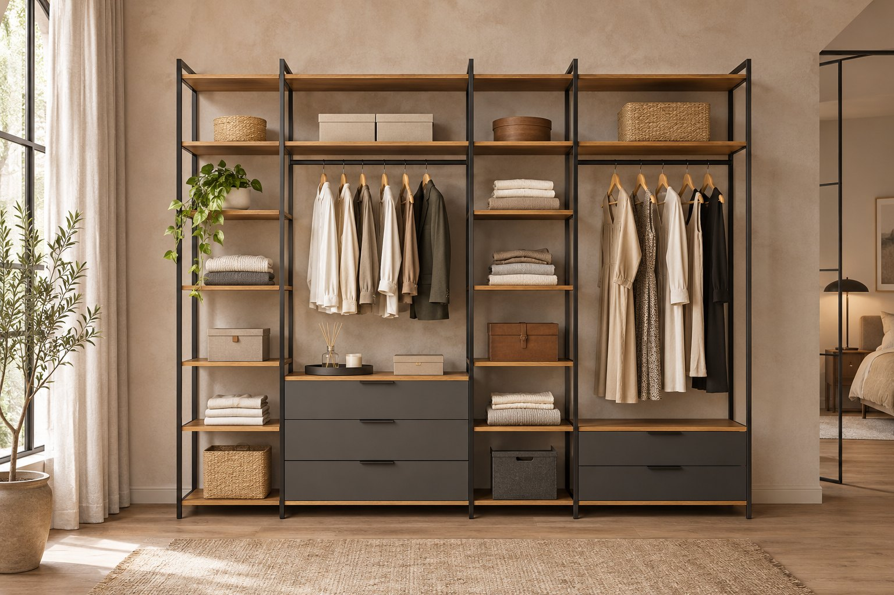

Гардеробная «Лофт»
Открытая система на стойках

В открытой системе полки и штанги читаются как отдельные элементы. Высокие секции подходят для длинной одежды, а блок ящиков позволяет хранить аксессуары вне поля зрения. Расстановку стоек и тип крепления подбирают под помещение.
Характеристики
- Конфигурация
- Открытая система на стойках
- Конструкция
- Открытые стойки из металла
- Размещение
- Вдоль стены гардеробной
- Наполнение
- Штанги, полки и блок ящиков
Возможные материалы
- Стальные стойки с матовым покрытием
- ЛДСП с фактурой дуба
- Графитовые фасады ящиков из МДФ или ЛДСП
Преимущества
- Видимый каркас оставляет интерьер визуально лёгким
- Открытые полки сочетаются с закрытыми ящиками